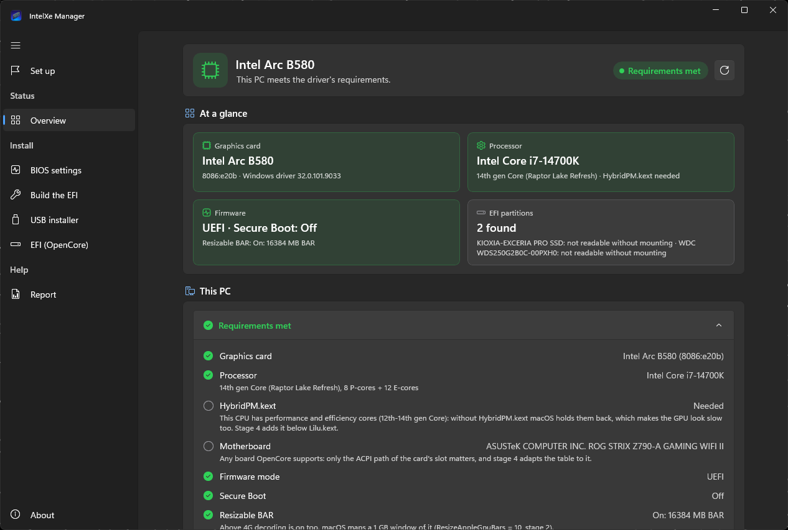
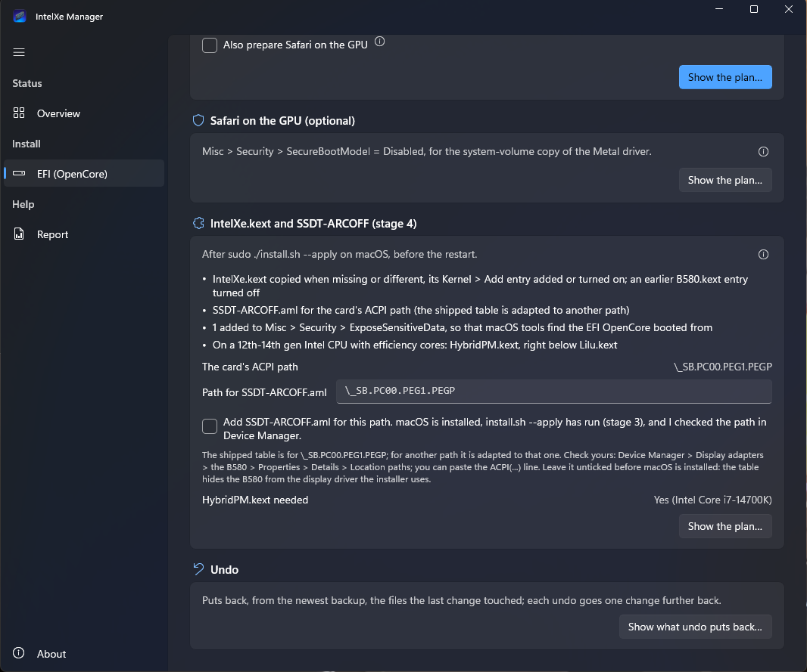
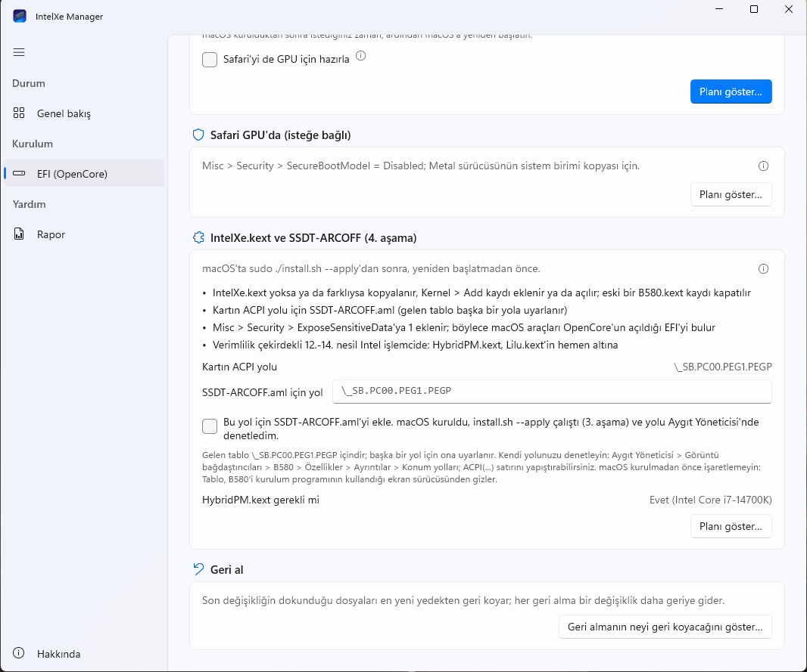
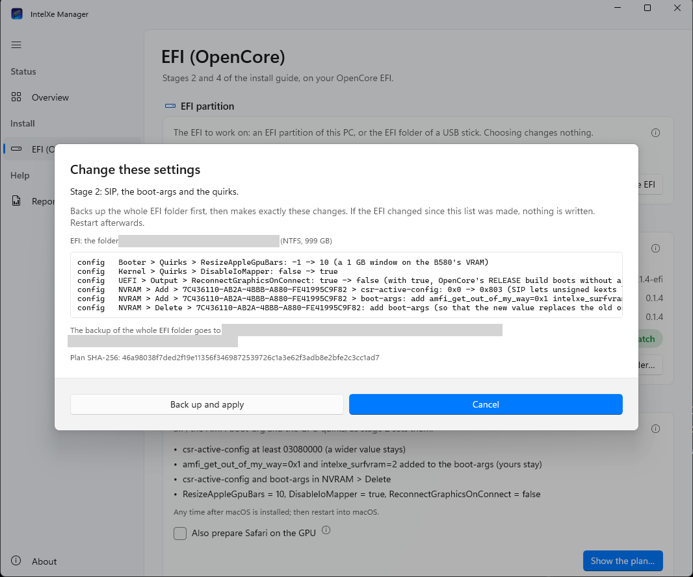

InstallationKurulum
From WindowsWindows'tan
Stages 2 and 4 change the OpenCore EFI, which you can do from Windows. The recommended way is IntelXe Manager for Windows, an app that shows each plan before it changes anything; IntelXe-EFI.ps1 in the -efi.zip makes the same changes as a script. Stage 3, the driver itself, is always installed on macOS. From a Windows PC without macOS yet, the app's Set up pages go the whole way: The Windows app, step by step.2. ve 4. aşamalar OpenCore EFI'sini değiştirir; bunu Windows'tan yapabilirsiniz. Önerilen yol, hiçbir şeyi değiştirmeden önce her planı gösteren bir uygulama olan Windows için IntelXe Manager; -efi.zip'teki IntelXe-EFI.ps1 aynı değişiklikleri bir betik olarak yapar. 3. aşama, yani sürücünün kendisi, her zaman macOS'ta kurulur. Henüz macOS'u olmayan bir Windows bilgisayardan uygulamanın Kurulum sayfaları bütün yolu gösterir: Windows uygulamasıyla adım adım.
- You needGerekenler
- macOS installed on the PC (stage 1);
IntelXeManager-0.1.6-win-x64.zipandintel-gpu-macos-driver-0.1.6-efi.zip; Windows 10 (2004 or later) or 11, x64; administrator rights only for an EFI partitionBilgisayarda kurulu macOS (1. aşama);IntelXeManager-0.1.6-win-x64.zipveintel-gpu-macos-driver-0.1.6-efi.zip; Windows 10 (2004 ya da sonrası) veya 11, x64; yönetici hakları yalnızca bir EFI bölümü için - TakesSüre
- Stage 2 any time after macOS is installed, then reboot into macOS; stage 3 on macOS; stage 4 before macOS starts again, then start macOS.2. aşama macOS kurulduktan sonra istediğiniz zaman, sonra macOS'u açın; 3. aşama macOS'ta; 4. aşama macOS yeniden açılmadan önce, sonra macOS'u açın.
- ResultSonuç
- The driver's entries in the EFI you chose, the whole EFI folder backed up first, every change undoable; after stage 4 the desktop is accelerated.Seçtiğiniz EFI'de sürücünün kayıtları; EFI klasörünün tamamı önce yedeklenir, her değişiklik geri alınabilir; 4. aşamadan sonra masaüstü hızlandırmalı.
Neither builds an EFI: you keep the one you made with Dortania's guide, and they change only what the driver needs, the rest of config.plist as it is (key order, comments, layout). Both read the same rules, efi-rules.json, as efi.sh on macOS; they back up the whole EFI folder in the same place before a change and undo each other's changes.
İkisi de EFI oluşturmaz: Dortania'nın rehberiyle hazırladığınız EFI sizde kalır; yalnızca sürücünün ihtiyaç duyduğunu değiştirir, config.plist'in geri kalanını olduğu gibi bırakırlar (anahtar sırası, yorumlar, düzen). İkisi de macOS'taki efi.sh gibi aynı kuralları, efi-rules.json'u okur; bir değişiklikten önce EFI klasörünün tamamını aynı yere yedekler ve birbirinin değişikliklerini geri alabilirler.
IntelXe Manager for WindowsWindows için IntelXe Manager
- Download
IntelXeManager-0.1.6-win-x64.zipandintel-gpu-macos-driver-0.1.6-efi.zipfrom the release page. - Check the app's zip before you unpack it: its SHA-256 must be the one listed for it in
intel-gpu-macos-driver-0.1.6.sha256on the release page. In PowerShell, in the download folder:
- Sürüm sayfasından
IntelXeManager-0.1.6-win-x64.zipveintel-gpu-macos-driver-0.1.6-efi.zipdosyalarını indirin. - Açmadan önce uygulamanın zip'ini denetleyin: SHA-256'sı, sürüm sayfasındaki
intel-gpu-macos-driver-0.1.6.sha256listesinde onun için yazanla aynı olmalı. PowerShell'de, indirme klasöründe:
Get-FileHash .\IntelXeManager-0.1.6-win-x64.zip -Algorithm SHA256- Unpack both zips into the same folder (right-click > Extract All) and start
IntelXeManager.exeinIntelXeManager-0.1.6-win-x64. Nothing is installed: the folder carries .NET, the Windows App SDK and the EFI builder's Python (about 216 MB). Windows 10 (2004 or later) or 11, x64. The app finds the unpacked-efi.zipnext to its own folder; Choose the -efi.zip... on its EFI page takes the zip itself.
- İki zip'i aynı klasöre açın (sağ tık > Tümünü Ayıkla) ve
IntelXeManager-0.1.6-win-x64içindekiIntelXeManager.exe'yi başlatın. Hiçbir şey kurulmaz: klasör .NET'i, Windows App SDK'yı ve EFI oluşturucunun Python'unu kendi içinde taşır (yaklaşık 216 MB). Windows 10 (2004 ya da sonrası) veya 11, x64. Uygulama açılmış-efi.zip'i kendi klasörünün yanında bulur; EFI sayfasındaki -efi.zip dosyasını seç... zip'in kendisini de alır.
Unknown publisher. The app is not signed with a code-signing certificate (the project has none). SmartScreen may therefore stop its first start with "Windows protected your PC" (More info > Run anyway), and the administrator prompt shows "Unknown publisher". That only says Windows cannot tell who made it; a changed copy would look the same. What tells you the zip is the release's is the SHA-256 above, from a list that is signed with the project's key (.sha256.sig; Windows has no tool for that signature, IntelXe Manager on macOS checks it). Do not run a copy from anywhere but the release page.
Bilinmeyen yayımcı. Uygulama bir kod imzalama sertifikasıyla imzalı değil (projenin sertifikası yok). Bu yüzden SmartScreen ilk açılışı "Windows bilgisayarınızı korudu" diyerek durdurabilir (Ek bilgi > Yine de çalıştır) ve yönetici izni penceresi "Bilinmeyen yayımcı" gösterir. Bu yalnızca Windows'un onu kimin yaptığını bilemediğini söyler; değiştirilmiş bir kopya da aynı görünür. Zip'in sürümünki olduğunu yukarıdaki SHA-256 söyler; o liste projenin anahtarıyla imzalı (.sha256.sig; Windows'ta bu imza için bir araç yok, macOS'taki IntelXe Manager denetler). Sürüm sayfasından başka bir yerden gelen bir kopyayı çalıştırmayın.


Set up: from this PC to macOS (experimental)Kurulum: bu bilgisayardan macOS'a (deneysel)
Set up is the app's first page: the way from this PC to an installed macOS as a list of steps, each done, next or blocked. Its pages: BIOS settings (this board maker's menu names for the firmware settings of stage 1, each marked done, to do or "cannot tell from Windows"; it changes no setting), Build the EFI (a stage-1 OpenCore EFI for this PC, made by OpCore Simplify at a pinned commit from pinned downloads, with stage 2 already in it and checked by ocvalidate; the scan keeps only the DSDT, SSDT, APIC and DMAR tables, and the generated serial numbers stay masked) and USB installer (macOS's recovery from Apple's servers, checked against Apple's chunklist, written with an EFI to a USB stick). Every step with the app's own words: The Windows app, step by step.
These pages are new and less tested than the EFI page: on the test PC they built an EFI that ocvalidate passed and wrote a real installer stick, read back identical, but no PC has yet booted from an EFI they built or a stick they wrote. Stage 1 by hand (Install macOS) is the tested way.
Kurulum uygulamanın ilk sayfası: bu bilgisayardan kurulu bir macOS'a giden yol, her biri bitti, sıradaki ya da engelli olarak gösterilen adımlarla. Sayfaları: BIOS ayarları (1. aşamanın firmware ayarları için bu anakart üreticisinin menü adları; her biri bitti, yapılacak ya da "Windows'tan anlaşılamıyor" olarak işaretli; hiçbir ayarı değiştirmez), EFI'yi oluştur (bu bilgisayar için 1. aşamanın OpenCore EFI'si; sabitlenmiş bir commit'teki OpCore Simplify ile, sabitlenmiş indirmelerden, 2. aşama içinde ve ocvalidate ile denetlenmiş; tarama yalnızca DSDT, SSDT, APIC ve DMAR tablolarını tutar, üretilen seri numaraları maskeli kalır) ve USB kurulum belleği (Apple'ın sunucularından macOS kurtarma görüntüsü, Apple'ın chunklist'ine göre denetlenir ve bir EFI ile USB belleğe yazılır). Uygulamanın kendi sözcükleriyle her adım: Windows uygulamasıyla adım adım.
Bu sayfalar yeni ve EFI sayfasından daha az denendi: test bilgisayarında ocvalidate'in geçirdiği bir EFI oluşturdular ve gerçek bir kurulum belleği yazdılar (geri okumada aynı), ama henüz hiçbir bilgisayar onların oluşturduğu bir EFI'den ya da yazdığı bir bellekten açılmadı. Denenmiş yol, elle yapılan 1. aşama (macOS'u kurmak).
Administrator rights: only for disksYönetici hakları: yalnızca diskler için
The app runs with your rights; its Overview never asks for more. Windows lets only administrators mount an EFI partition, so for each reading, plan and change of a partition the app starts a helper of its own, IntelXeManager.exe --efi-helper, with administrator rights. Windows asks each time: once to read the EFI, once for a plan, once for the change (the prompt names IntelXeManager.exe and an unknown publisher). The helper opens no window: it mounts the partition at a free drive letter, does that one thing and unmounts it again. An EFI folder on a USB stick, or a copy of one, needs no prompt at all. The same helper scans the PC for Build the EFI (--efi-helper sniff), and writing a USB stick asks too (--stick-helper for the installer stick, --probe-helper for the probe stick); a report with Boot logs asks to read the EFI partitions. If the app asks for administrator rights at any other time, say no and open an issue.
Uygulama sizin haklarınızla çalışır; Genel bakış sayfası hiçbir zaman fazlasını istemez. Windows bir EFI bölümünü yalnızca yöneticilerin bağlamasına izin verir; bu yüzden uygulama bir bölümü her okuyuşunda, planlayışında ve değiştirişinde kendi yardımcısını, IntelXeManager.exe --efi-helper'ı yönetici haklarıyla başlatır. Windows her seferinde sorar: EFI'yi okumak için bir, plan için bir, değişiklik için bir kez (pencere IntelXeManager.exe'yi ve bilinmeyen bir yayımcıyı gösterir). Yardımcı pencere açmaz: bölümü boş bir sürücü harfine bağlar, o tek işi yapar ve bağlantıyı yeniden kaldırır. USB bellekteki bir EFI klasörü ya da bir kopyası için hiç sorulmaz. Aynı yardımcı EFI'yi oluştur için bilgisayarı da tarar (--efi-helper sniff); bir USB belleğe yazmak da sorar (kurulum belleği için --stick-helper, tarama belleği için --probe-helper); Açılış günlükleri açık bir rapor da EFI bölümlerini okumak için sorar. Uygulama başka bir anda yönetici hakkı isterse hayır deyin ve bir issue açın.
Stages 2 and 4 with the appUygulamayla 2. ve 4. aşamalar
On the EFI (OpenCore) page, choose the EFI: an EFI partition of the PC (the list names its disk and whether Windows booted from it) or Use an EFI folder... for a USB stick's EFI folder. Read the EFI shows what each stage would still change. Then:
- Settings (stage 2), any time after macOS is installed: the same items 1 to 5 as below; tick Also prepare Safari on the GPU to set
SecureBootModelin the same change, or use the Safari on the GPU section later. - IntelXe.kext and SSDT-ARCOFF (stage 4), after
sudo ./install.sh --applyon macOS and before macOS starts again:IntelXe.kext,HybridPM.kexton a 12th-14th gen hybrid CPU, andSSDT-ARCOFF.amlonly when you confirm the card's ACPI path. The app fills the path in from Device Manager when Windows runs on the PC with the card; correct it if needed and tick that macOS is installed, stage 3 is done and you checked the path. - Boot logging (for troubleshooting), for a PC that does not start: OpenCore's log and the saved panics in the EFI's root, for a report; turn it off again afterwards (Boot logging).
- Undo puts back, from the newest backup, the files the last change touched.
Show the plan... opens the plan: its steps, its notes, where the backup goes and the plan's SHA-256. Back up and apply (the default button is Cancel) backs up the whole EFI folder and makes exactly that plan; if the EFI changed since the plan was shown, nothing is written. Plans and results are shown in English or Turkish, as the app's language.
EFI (OpenCore) sayfasında EFI'yi seçin: bilgisayarın bir EFI bölümü (liste diskini ve Windows'un ondan açılıp açılmadığını gösterir) ya da bir USB belleğin EFI klasörü için Bir EFI klasörü kullan.... EFI'yi oku, her aşamanın daha neyi değiştireceğini gösterir. Sonra:
- Ayarlar (2. aşama), macOS kurulduktan sonra istediğiniz zaman: aşağıdaki 1-5. maddelerin aynısı;
SecureBootModel'i aynı değişiklikte ayarlamak için Safari'yi de GPU için hazırla'yı işaretleyin ya da sonra Safari GPU'da bölümünü kullanın. - IntelXe.kext ve SSDT-ARCOFF (4. aşama), macOS'ta
sudo ./install.sh --apply'dan sonra, macOS yeniden açılmadan önce:IntelXe.kext, 12.-14. nesil hibrit işlemcideHybridPM.kextve yalnızca kartın ACPI yolunu onayladığınızdaSSDT-ARCOFF.aml. Windows kartın takılı olduğu bilgisayarda çalışıyorsa uygulama yolu Aygıt Yöneticisi'nden doldurur; gerekirse düzeltin ve macOS'un kurulu olduğunu, 3. aşamanın bittiğini ve yolu denetlediğinizi işaretleyin. - Açılış günlüğü (sorun giderme için), açılmayan bir bilgisayar için: OpenCore'un günlüğü ve kaydedilen panikler, bir rapor için EFI'nin kökünde; sonra yeniden kapatın (Açılış günlüğü).
- Geri al, en yeni yedekten son değişikliğin dokunduğu dosyaları geri koyar.
Planı göster... planı açar: adımlarını, notlarını, yedeğin nereye gideceğini ve planın SHA-256'sını. Yedekle ve uygula (varsayılan düğme İptal) EFI klasörünün tamamını yedekler ve tam olarak o planı yapar; plan gösterildikten sonra EFI değiştiyse hiçbir şey yazılmaz. Planlar ve sonuçlar uygulamanın diliyle Türkçe ya da İngilizce gösterilir.







Not yet used on a real EFI partition. The EFI page was tested on Windows 11 on test EFI folders, its administrator helper included, and by its tests, which run the 32 shared test vectors of the EFI rules through the same engine as the script. Changing a real EFI partition (the mounting runs only with a stand-in in the tests) and booting from an EFI it changed have not been tried yet; neither has booting from an EFI that Build the EFI made or a stick the app wrote (status of 14 November 2026). Keep your USB stick with a working EFI, and read each plan before you confirm it. The app's Report page runs tools/report/collect-windows.ps1 (shipped with it) if something goes wrong.
Henüz gerçek bir EFI bölümünde kullanılmadı. EFI sayfası Windows 11'de deneme EFI klasörlerinde, yönetici yardımcısı dahil, ve EFI kurallarının 32 ortak deneme vektörünü betikle aynı çekirdekten geçiren testleriyle denendi. Gerçek bir EFI bölümünü değiştirmek (bağlama testlerde yalnızca bir yedek parçayla çalışıyor) ve onun değiştirdiği bir EFI'den açmak henüz denenmedi; EFI'yi oluştur'un yaptığı bir EFI'den ya da uygulamanın yazdığı bir bellekten açmak da (14 Kasım 2026 itibarıyla). Çalışan EFI'li USB belleğinizi saklayın ve her planı onaylamadan önce okuyun. Bir şey ters giderse uygulamanın Rapor sayfası tools/report/collect-windows.ps1'i (uygulamayla gelir) çalıştırır.
Without the app: the script IntelXe-EFI.ps1Uygulamasız: IntelXe-EFI.ps1 betiği
The scripted way, for the command line, for scripting, or when the app cannot run. IntelXe-EFI.ps1 comes in the -efi.zip with efi-rules.json and the OpenCore pieces; it runs in Windows PowerShell 5.1 (part of Windows 10 and 11) or PowerShell 7, and nothing needs to be installed. The zip's README-Windows.md has every detail. Like the app it does not build an EFI: it makes the config.plist changes and copies the files of stages 2 and 4, the same changes as efi.sh on macOS, in an OpenCore EFI folder you point it to (a USB stick's, or the EFI partition of a disk, which it can mount). The sections below describe its window and its command line:
- Settings: plan / apply: SIP, the AMFI boot-arg,
intelxe_surfvram=2, two quirks andReconnectGraphicsOnConnect = false(stage 2); - Driver: plan / apply:
IntelXe.kext, SSDT-ARCOFF adapted to your card's ACPI path (read from Device Manager),HybridPM.kexton a 12th-14th gen hybrid CPU (stage 4); - every change planned first, carrying the plan's SHA-256, with a backup and an undo (undo); a window, and a command line.
Betik yolu; komut satırı, otomasyon ya da uygulamanın çalışamadığı durumlar için. IntelXe-EFI.ps1, -efi.zip'te efi-rules.json ve OpenCore parçalarıyla birlikte gelir; Windows PowerShell 5.1'de (Windows 10 ve 11'le gelir) ya da PowerShell 7'de çalışır, bir şey kurmanız gerekmez. Bütün ayrıntılar zip'teki README-Windows.md'de. Uygulama gibi EFI oluşturmaz: 2. ve 4. aşamaların config.plist değişikliklerini yapar ve dosyalarını kopyalar; efi.sh'in macOS'ta yaptıklarının aynısını, gösterdiğiniz bir OpenCore EFI klasöründe (bir USB belleğinkinde ya da bağlayabildiği bir diskin EFI bölümünde). Aşağıdaki bölümler penceresini ve komut satırını anlatır:
- Settings: plan / apply: SIP, AMFI boot-arg'ı,
intelxe_surfvram=2, iki quirk veReconnectGraphicsOnConnect = false(2. aşama); - Driver: plan / apply:
IntelXe.kext, kartınızın ACPI yoluna (Aygıt Yöneticisi'nden okunur) uyarlanmış SSDT-ARCOFF, 12.-14. nesil hibrit işlemcideHybridPM.kext(4. aşama); - her değişiklik önce planlanır, planın SHA-256'sını taşır, yedeklenir ve geri alınabilir (geri alma); bir pencere ve bir komut satırı.
Tested by its test suite. The suite runs every step against a throwaway EFI folder and passes on Windows; its config-editing engine was checked on macOS against efi.sh, and its HybridPM.kext and adapted SSDT-ARCOFF.aml steps ran on Windows 11 in the shared vectors (through the app's tests, which compile the script's engine). The window itself and the EFI partition mounting have not yet been used on an EFI that a PC then booted. Keep your USB stick with a working EFI, and read each plan before you confirm it.
Deneme takımıyla denendi. Takım her adımı geçici bir EFI klasörüne karşı çalıştırıyor ve Windows'ta hatasız geçiyor; yapılandırma düzenleme çekirdeği macOS'ta efi.sh'e karşı denetlendi, HybridPM.kext ve uyarlanmış SSDT-ARCOFF.aml adımları da Windows 11'de ortak vektörlerde çalıştı (betiğin çekirdeğini derleyen uygulamanın testleriyle). Pencerenin kendisi ve EFI bölümünü bağlama, henüz ardından bir bilgisayarın açıldığı bir EFI'de kullanılmadı. Çalışan EFI'li USB belleğinizi saklayın ve her planı onaylamadan önce okuyun.
The script: starting itBetik: başlatmak
- Unpack the
-efi.zip(right-click > Extract All). - Right-click
IntelXe-EFI.ps1> Run with PowerShell. A window opens. If Windows refuses to run it ("running scripts is disabled"), start it from a PowerShell window instead;-ExecutionPolicy Bypassapplies to that one run only, and a file downloaded with a browser may also needUnblock-File .\IntelXe-EFI.ps1once:
-efi.zip'i açın (sağ tık > Tümünü Ayıkla).IntelXe-EFI.ps1'e sağ tıklayıp PowerShell ile Çalıştır'ı seçin. Bir pencere açılır. Windows çalıştırmayı reddederse ("running scripts is disabled") bir PowerShell penceresinden başlatın;-ExecutionPolicy Bypassyalnızca o çalıştırma için geçerli. Tarayıcıyla indirilen bir dosya bir kezUnblock-File .\IntelXe-EFI.ps1de isteyebilir:
cd $HOME\Downloads\intel-gpu-macos-driver-0.1.6-efi
powershell -ExecutionPolicy Bypass -File .\IntelXe-EFI.ps1Administrator rights are needed only for an EFI partition: Windows lets only administrators mount it and write to it. A USB stick or a copy of an EFI folder works without them. The window's Restart as administrator button starts it again elevated, with your folders filled in.
Yönetici hakları yalnızca bir EFI bölümü için gerekir: Windows o bölümü yalnızca yöneticilerin bağlamasına ve yazmasına izin veriyor. USB bellek ya da bir EFI klasörünün kopyası onlarsız da olur. Penceredeki Restart as administrator düğmesi aracı klasörleriniz dolu olarak yönetici haklarıyla yeniden başlatır.
The script: the EFI folder and the backupsBetik: EFI klasörü ve yedekler
- EFI folder. For a USB stick, Browse... to its
EFIfolder (the one withOCandBOOTin it), e.g.E:\EFI. For the EFI partition of a disk, press Mount EFI partition... (administrator): it lists the EFI partitions of the PC with their disk's name and size, mounts the one you choose withmountvol(nothing is written to it) and fills inS:\EFI. Unmount EFI partition takes the letter away again. - Package folder is filled in when the script sits in the unpacked
-efi.zip. - Backups: leave it empty. Before each change the whole EFI folder is copied to a numbered, dated folder: next to the EFI folder (
E:\IntelXe-EFI-backups\...), or, for an EFI partition (less than 2 GB, its space is for booting), to%LOCALAPPDATA%\intel-gpu-macos-driver\efi-backups\. Undo looks in the same place.
- EFI folder. USB bellek için Browse... ile belleğin
EFIklasörünü seçin (içindeOCveBOOTolan), ör.E:\EFI. Bir diskin EFI bölümü için Mount EFI partition...'a basın (yönetici): bilgisayardaki EFI bölümlerini diskin adı ve boyutuyla listeler, seçtiğinizimountvolile bağlar (ona hiçbir şey yazılmaz) veS:\EFI'yi doldurur. Unmount EFI partition sürücü harfini geri kaldırır. - Package folder, betik açılmış
-efi.zip'in içindeyse kendiliğinden dolar. - Backups: boş bırakın. Her değişiklikten önce EFI klasörünün tamamı numaralı ve tarihli bir klasöre kopyalanır: EFI klasörünün yanına (
E:\IntelXe-EFI-backups\...) ya da EFI bölümü için (2 GB'tan küçük; alanı açılış içindir)%LOCALAPPDATA%\intel-gpu-macos-driver\efi-backups\altına. Geri alma da aynı yere bakar.
The script, stage 2: the settingsBetik, 2. aşama: ayarlar
Any time after macOS is installed. Settings: plan shows what changes; Settings: apply... shows the plan again and asks, then backs up and writes. It makes items 1 to 5 of stage 2:
csr-active-configat least03080000(a wider value stays);amfi_get_out_of_my_way=0x1andintelxe_surfvram=2added to the boot-args (yours stay);csr-active-configandboot-argsinNVRAM > Delete;ResizeAppleGpuBars = 10,DisableIoMapper = true,ReconnectGraphicsOnConnect = false.
It keeps the rest of config.plist as it is and can undo the change. Item 6 (SecureBootModel, for Safari on the GPU) is a change of its own: -Plan safari on the command line (or settings-safari for both at once), the Windows app's Safari on the GPU section, or the macOS app later (Optional extras). Then reboot into macOS; the screen still runs on the firmware output.
macOS kurulduktan sonra istediğiniz zaman. Settings: plan nelerin değişeceğini gösterir; Settings: apply... planı yeniden gösterip sorar, sonra yedekleyip yazar. 2. aşamanın 1-5. maddelerini yapar:
csr-active-configen az03080000(daha geniş bir değer kalır);- boot-args'a
amfi_get_out_of_my_way=0x1veintelxe_surfvram=2eklenir (sizinkiler kalır); csr-active-configveboot-argsNVRAM > Delete'e girer;ResizeAppleGpuBars = 10,DisableIoMapper = true,ReconnectGraphicsOnConnect = false.
config.plist'in geri kalanını olduğu gibi bırakır ve değişikliği geri alabilir. 6. madde (GPU'da Safari için SecureBootModel) ayrı bir değişiklik: komut satırında -Plan safari (ikisi birden için settings-safari), Windows uygulamasının Safari GPU'da bölümü ya da sonra macOS uygulaması (İsteğe bağlı ekler). Ardından macOS'u açın; ekran hâlâ UEFI çıktısında çalışır.
Stage 3: the driver, on macOS3. aşama: sürücü, macOS'ta
In macOS on the PC, install the driver with IntelXe Manager or in Terminal: From macOS, steps 1 to 5 of the app or 3.2 in Terminal. Do not start macOS again before stage 4: shut it down and make stage 4 below, or stay in macOS and let the app's EFI page or efi.sh make stage 4 there (From macOS, stage 4), which also reads your card's ACPI path itself.
Bilgisayardaki macOS'ta sürücüyü IntelXe Manager'la ya da Terminal'de kurun: macOS'tan, uygulamada 1-5. adımlar ya da Terminal'de 3.2. 4. aşamadan önce macOS'u yeniden açmayın: kapatıp aşağıdaki 4. aşamayı yapın ya da macOS'ta kalıp 4. aşamayı orada uygulamanın EFI sayfasına veya efi.sh'e yaptırın (macOS'tan, 4. aşama); o yol kartınızın ACPI yolunu da kendisi okur.
The script, stage 4: IntelXe.kext, SSDT-ARCOFF and HybridPMBetik, 4. aşama: IntelXe.kext, SSDT-ARCOFF ve HybridPM
After sudo ./install.sh --apply on macOS, before macOS starts again. Driver: plan / Driver: apply..., with a backup and an undo:
- copy
IntelXe.kext(when missing or different), add or enable itsKernel > Addentry, turn off an earlierB580.kextentry, and add 1 toMisc > Security > ExposeSensitiveData(so that macOS tools find the EFI OpenCore booted from); - on a 12th-14th gen Intel CPU with efficiency cores (Alder Lake / Raptor Lake; not Core Ultra, not the desktop models with P-cores only), copy
HybridPM.kextand add or enable its entry right belowLilu.kext's (it is a Lilu plugin), asefi.shdoes. The CPU is the one of the PC the tool runs on: run it on the PC that boots the EFI. WithoutLilu.kextin the EFI it adds nothing and says so.
SSDT-ARCOFF.aml is added only when you tick its box and give your card's ACPI path: Windows cannot check the path the way efi.sh does on macOS. In Device Manager > Display adapters > the B580 (or "Microsoft Basic Display Adapter") > Properties > Details > Location paths, the line ACPI(_SB_)#ACPI(PC00)#ACPI(PEG1)#ACPI(PEGP)#PCI(0100)#PCI(0000) means \_SB.PC00.PEG1.PEGP; you can paste the line as it is. Read from Windows reads it when Windows runs on the PC with the card. For a path other than the shipped table's, the tool adapts a copy of the table, as efi.sh does (the plan says "the package's table adapted to this card's port"); your own SSDT-ARCOFF.aml that names the card's path stays. More on the path: The EFI by hand.
Then start macOS. The desktop should now be accelerated: check it.
macOS'ta sudo ./install.sh --apply'dan sonra, macOS yeniden açılmadan önce. Driver: plan / Driver: apply..., yedek ve geri alma ile:
IntelXe.kext'i kopyalar (yoksa ya da farklıysa),Kernel > Addkaydını ekler ya da açar, eski birB580.kextkaydını kapatır veMisc > Security > ExposeSensitiveData'ya 1 ekler (macOS araçları OpenCore'un açıldığı EFI'yi bulabilsin diye);- verimlilik çekirdekli 12.-14. nesil Intel işlemcide (Alder Lake / Raptor Lake; Core Ultra ve yalnızca P çekirdekli masaüstü modelleri değil)
efi.shgibiHybridPM.kext'i de kopyalar ve kaydınıLilu.kext'in kaydının hemen altına ekler ya da açar (bir Lilu eklentisidir). İşlemci, aracın çalıştığı bilgisayarınkidir: aracı EFI'yi açacak bilgisayarda çalıştırın. EFI'deLilu.kextyoksa hiçbir şey eklemez ve bunu söyler.
SSDT-ARCOFF.aml yalnızca kutusunu işaretleyip kartınızın ACPI yolunu yazarsanız eklenir: Windows, yolu efi.sh'in macOS'ta yaptığı gibi denetleyemez. Aygıt Yöneticisi > Görüntü bağdaştırıcıları > B580 (ya da "Microsoft Temel Görüntü Bağdaştırıcısı") > Özellikler > Ayrıntılar > Konum yolları'ndaki ACPI(_SB_)#ACPI(PC00)#ACPI(PEG1)#ACPI(PEGP)#PCI(0100)#PCI(0000) satırı \_SB.PC00.PEG1.PEGP demektir; satırı olduğu gibi yapıştırabilirsiniz. Read from Windows, Windows kartın takılı olduğu bilgisayarda çalışıyorsa yolu okur. Paketteki tablonunkinden farklı bir yolda araç, efi.sh gibi tablonun bir kopyasını uyarlar (planda "the package's table adapted to this card's port"); kartın yolunu adlandıran kendi SSDT-ARCOFF.aml'niz kalır. Yol hakkında daha fazlası: EFI'yi elle düzenlemek.
Sonra macOS'u açın. Masaüstü artık hızlandırmalı olmalı: kontrol edin.
The script: undo, and every change is plannedBetik: geri alma; her değişiklik önce planlanır
Undo last change... puts back, from the newest backup, the files that change touched (config.plist, IntelXe.kext, HybridPM.kext, SSDT-ARCOFF.aml); each undo goes one change further back. It warns when config.plist was edited after that change (putting it back loses those edits). The backups stay.
Every change is planned first and carries the plan's SHA-256: if the EFI changed between the plan you read and your confirmation, nothing is written. config.plist is edited in memory, read back and checked before it replaces the old one; a damaged package (its files differ from its SHA256SUMS) is refused.
Undo last change... en yeni yedekten, o değişikliğin dokunduğu dosyaları (config.plist, IntelXe.kext, HybridPM.kext, SSDT-ARCOFF.aml) geri koyar; her geri alma bir değişiklik daha geriye gider. O değişiklikten sonra config.plist düzenlendiyse uyarır (geri koymak o düzenlemeleri siler). Yedekler kalır.
Her değişiklik önce planlanır ve planın SHA-256'sını taşır: okuduğunuz planla onayınız arasında EFI değiştiyse hiçbir şey yazılmaz. config.plist bellekte düzenlenir, yerine konmadan önce yeniden okunup denetlenir; dosyaları SHA256SUMS ile uyuşmayan (bozuk) bir paket reddedilir.
The script's command lineBetiğin komut satırı
.\IntelXe-EFI.ps1 -Status -Efi E:\EFI
.\IntelXe-EFI.ps1 -Plan settings -Efi E:\EFI # prints the plan and its SHA-256
.\IntelXe-EFI.ps1 -Apply settings -Efi E:\EFI -Expect <SHA-256>
.\IntelXe-EFI.ps1 -Plan driver -Efi E:\EFI [-CardAcpiPath '\_SB.PC00.PEG1.PEGP']
.\IntelXe-EFI.ps1 -Apply driver -Efi E:\EFI [-CardAcpiPath ...] -Expect <SHA-256>
.\IntelXe-EFI.ps1 -Plan safari -Efi E:\EFI # SecureBootModel = Disabled, for the system-volume copy
.\IntelXe-EFI.ps1 -Apply safari -Efi E:\EFI -Expect <SHA-256>
.\IntelXe-EFI.ps1 -Plan bootlog -Efi E:\EFI # boot logging, for a PC that does not start
.\IntelXe-EFI.ps1 -Apply bootlog -Efi E:\EFI -Expect <SHA-256>
.\IntelXe-EFI.ps1 -Plan bootlog-off -Efi E:\EFI # boot logging off again
.\IntelXe-EFI.ps1 -Apply bootlog-off -Efi E:\EFI -Expect <SHA-256>
.\IntelXe-EFI.ps1 -Plan undo -Efi E:\EFI
.\IntelXe-EFI.ps1 -Undo -Efi E:\EFI -Expect <SHA-256>
.\IntelXe-EFI.ps1 -ListEsp # administrator: the EFI partitions
.\IntelXe-EFI.ps1 -MountEsp '\\?\Volume{...}\' # administrator; -MountEsp system = mountvol S: /S
.\IntelXe-EFI.ps1 -UnmountEsp S:
.\IntelXe-EFI.ps1 -Help.\IntelXe-EFI.ps1 -Status -Efi E:\EFI
.\IntelXe-EFI.ps1 -Plan settings -Efi E:\EFI # planı ve SHA-256'sını yazar
.\IntelXe-EFI.ps1 -Apply settings -Efi E:\EFI -Expect <SHA-256>
.\IntelXe-EFI.ps1 -Plan driver -Efi E:\EFI [-CardAcpiPath '\_SB.PC00.PEG1.PEGP']
.\IntelXe-EFI.ps1 -Apply driver -Efi E:\EFI [-CardAcpiPath ...] -Expect <SHA-256>
.\IntelXe-EFI.ps1 -Plan safari -Efi E:\EFI # SecureBootModel = Disabled, sistem diski kopyası için
.\IntelXe-EFI.ps1 -Apply safari -Efi E:\EFI -Expect <SHA-256>
.\IntelXe-EFI.ps1 -Plan bootlog -Efi E:\EFI # açılış günlüğü, açılmayan bir bilgisayar için
.\IntelXe-EFI.ps1 -Apply bootlog -Efi E:\EFI -Expect <SHA-256>
.\IntelXe-EFI.ps1 -Plan bootlog-off -Efi E:\EFI # açılış günlüğünü yeniden kapatmak
.\IntelXe-EFI.ps1 -Apply bootlog-off -Efi E:\EFI -Expect <SHA-256>
.\IntelXe-EFI.ps1 -Plan undo -Efi E:\EFI
.\IntelXe-EFI.ps1 -Undo -Efi E:\EFI -Expect <SHA-256>
.\IntelXe-EFI.ps1 -ListEsp # yönetici: EFI bölümleri
.\IntelXe-EFI.ps1 -MountEsp '\\?\Volume{...}\' # yönetici; -MountEsp system = mountvol S: /S
.\IntelXe-EFI.ps1 -UnmountEsp S:
.\IntelXe-EFI.ps1 -Help-Package DIR (default: the script's folder) and -BackupDir DIR work with all of them. mountvol S: /S mounts the EFI partition Windows booted from; when OpenCore is on another disk, use -ListEsp and -MountEsp with its volume. To edit the EFI by hand from Windows instead: mounting the EFI partition.
-Package DIR (varsayılan: betiğin klasörü) ve -BackupDir DIR hepsiyle çalışır. mountvol S: /S Windows'un açıldığı EFI bölümünü bağlar; OpenCore başka bir diskteyse -ListEsp ve o bölümün birimiyle -MountEsp kullanın. EFI'yi bunun yerine Windows'tan elle düzenlemek için: EFI bölümünü bağlamak.